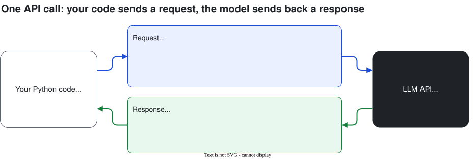
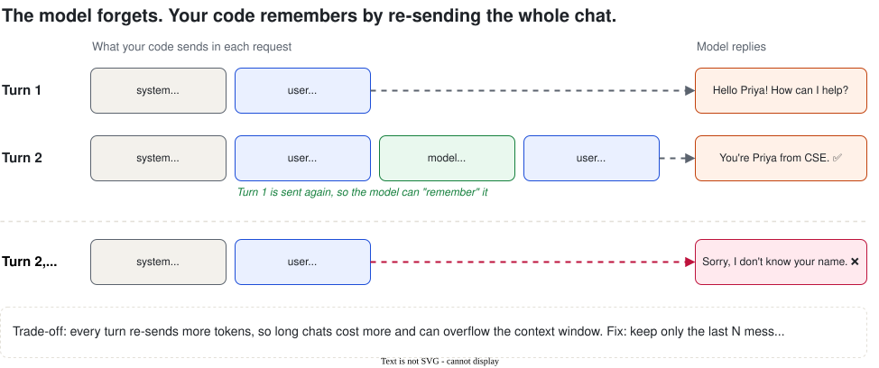
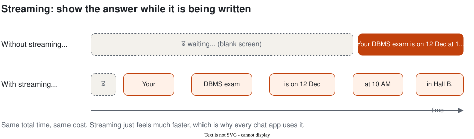

Building with LLM APIs
So far we've used chat apps. Now we call the model from our own Python code, so we can build our own apps. By the end you'll have a working chatbot that remembers the conversation.
1. What is an API?
An API (Application Programming Interface) is a way for one program to ask another program to do something. You send a request, you get back a response.
| Chat app (ChatGPT, Gemini) | API | |
|---|---|---|
| Who uses it | A person, typing | Your program |
| What you can build | Nothing; you just chat | Your own apps: bots, tools, automations |
| Memory | Built in | You build it yourself (section 5) |
| Cost | Free or monthly plan | Pay per token (free tiers exist) |

2. Your API key, and keeping it secret
An API key is a long secret string that proves the request is from you. Whoever has your key can use your account and your quota.
- Get a free Gemini key at Google AI Studio (no credit card), or a Groq key at console.groq.com.
- In Google Colab, click the 🔑 Secrets icon, add a secret named
GEMINI_API_KEY, paste the key and switch on Notebook access. - Read it in code with
userdata.get("GEMINI_API_KEY").
api_key = "AIzaSy..." written in your code and pushed to GitHub. Bots scan public repos and find leaked keys within minutes.
.env file that is listed in .gitignore. If a key leaks, delete it in the console and make a new one.
3. Your first API call
!pip install -q google-genai
from google import genai
from google.colab import userdata
client = genai.Client(api_key=userdata.get("GEMINI_API_KEY"))
MODEL = "gemini-2.5-flash" # any current free model from Google AI Studio
resp = client.models.generate_content(
model=MODEL,
contents="Explain what a compiler does in 2 lines, for a first-year student.",
)
print(resp.text)That's it: a client, a model name, and your text. Everything else is optional.
Adding settings
Use a config to add a system prompt (Session 2), temperature (Session 1) and a limit on answer length:
from google.genai import types
resp = client.models.generate_content(
model=MODEL,
contents="Suggest 3 names for our college coding club.",
config=types.GenerateContentConfig(
system_instruction="You are a creative assistant. Reply as a numbered list.",
temperature=1.0, # creative task, so higher
max_output_tokens=200, # stop after ~150 words
),
)
print(resp.text)resp.text: the answerresp.usage_metadata: how many tokens went in and came out (this is what you pay for)resp.candidates[0].finish_reason:STOPmeans finished normally;MAX_TOKENSmeans it was cut off
4. Messages and roles
A chat is a list of messages. Each message has a role that says who wrote it:
| Role | Who | Example |
|---|---|---|
| system | You, the developer (hidden rules) | "You are CampusBuddy. Answer only college questions." |
| user | The person chatting | "When is the DBMS exam?" |
| model / assistant | The AI's earlier replies | "DBMS is on 12 Dec at 10 AM." |
Gemini calls the AI's role model and passes the system prompt in the config. OpenAI-style APIs (Groq, OpenAI) call it assistant and put the system prompt as the first message. Same idea, different names.
5. Chat memory: the model forgets, your code remembers
Remember from Session 1: LLMs have no memory between calls. Each request starts fresh. So how does ChatGPT remember your name? The app re-sends the whole conversation every time.

In code, memory is just a Python list that grows:
SYSTEM = "You are CampusBuddy, a friendly helpdesk bot for ABC Engineering College."
history = [] # the whole conversation lives here
def chat(user_text):
history.append({"role": "user", "parts": [{"text": user_text}]})
resp = client.models.generate_content(
model=MODEL,
contents=history, # send EVERYTHING so far
config=types.GenerateContentConfig(system_instruction=SYSTEM),
)
history.append({"role": "model", "parts": [{"text": resp.text}]})
return resp.text
print(chat("Hi, I'm Priya from CSE."))
print(chat("What's my name and branch?")) # → Priya, CSEcontents=history to contents=user_text and ask "What's my name?" again. The bot forgets. That one line is the memory.
The catch: long chats get expensive
Every turn re-sends all earlier turns, so the input grows. Turn 20 might send 5,000 tokens just to answer "ok thanks". Two simple fixes:
- Keep only the last N messages:
contents=history[-10:] - Summarise old messages: ask the model to summarise the first part of the chat, then send the summary instead.
The SDK also has a shortcut, client.chats.create(...), that keeps the history for you. We build it by hand first so you know what's happening inside.
6. Streaming
A long answer can take several seconds. Without streaming, the user stares at a blank screen and then everything appears at once. With streaming, words appear as the model writes them, like in ChatGPT.

for chunk in client.models.generate_content_stream(
model=MODEL,
contents="Give 5 tips to prepare for campus placements.",
):
print(chunk.text or "", end="", flush=True)Same cost, same total time. It just feels much faster. Use it whenever a person is waiting for the answer.
7. Tokens and cost
APIs charge per token (Session 1), with separate prices for input (what you send) and output (what the model writes). Output usually costs several times more than input.
u = resp.usage_metadata
print("Input tokens: ", u.prompt_token_count)
print("Output tokens:", u.candidates_token_count)
print("Total: ", u.total_token_count)Prices change, so always check the provider's pricing page. Say a model costs $0.30 per million input tokens and $2.50 per million output tokens (illustrative).
| Calculation | Tokens per day | Cost per day | |
|---|---|---|---|
| Input | 2,000 students × 10 questions × 500 tokens | 10 million | $3.00 |
| Output | 2,000 students × 10 questions × 200 tokens | 4 million | $10.00 |
| Total | $13 a day (roughly ₹1,100) | ||
PRICE_IN, PRICE_OUT = 0.30, 2.50 # $ per million tokens (check current prices)
def cost(resp):
u = resp.usage_metadata
return (u.prompt_token_count * PRICE_IN + (u.candidates_token_count or 0) * PRICE_OUT) / 1_000_000
print(f"This answer cost ${cost(resp):.6f}")How to keep costs down
- Use the smallest model that's good enough (Session 1 checklist).
- Keep the system prompt short; it's sent on every turn.
- Trim the history (last N messages, or a summary).
- Set
max_output_tokensand ask for short answers. - Cache answers to common questions instead of asking the model again.
Some newer models also "think" before answering. Those thinking tokens are billed as output too, so a reasoning model can cost more for the same visible answer.
8. Errors and rate limits
Real apps must handle failures. The common ones:
| Error | What it means | What to do |
|---|---|---|
| 400 Bad request | Something wrong in your request (bad model name, bad format) | Fix your code |
| 401 / 403 | Key missing, wrong or not allowed | Check the key and its secret name |
| 429 Too many requests | You hit the rate limit (requests per minute) or daily quota | Wait and retry; slow down |
| 500 / 503 | Problem on the provider's side | Wait and retry |
import time
from google.genai import errors
def ask_with_retry(prompt, tries=3):
for i in range(tries):
try:
return client.models.generate_content(model=MODEL, contents=prompt).text
except errors.APIError as e:
if e.code in (429, 500, 503) and i < tries - 1:
wait = 5 * 2 ** i # 5s, then 10s, then 20s
print(f"Error {e.code}, retrying in {wait}s...")
time.sleep(wait)
else:
raiseWaiting longer after each failure is called exponential backoff. Free tiers have low rate limits, so in a class of 60 students you may see 429s. That's normal; wait a minute and try again.
9. Other providers look the same
Every LLM API follows the same pattern: model + messages + settings → text + token usage. Once you know one, the others take minutes. Here is the same call on Groq (fast, free tier, open models like Llama), which uses the OpenAI-style format:
!pip install -q groq
from groq import Groq
groq = Groq(api_key=userdata.get("GROQ_API_KEY"))
resp = groq.chat.completions.create(
model="llama-3.3-70b-versatile", # check console.groq.com for current models
messages=[
{"role": "system", "content": "You are CampusBuddy."},
{"role": "user", "content": "Explain what a compiler does in 2 lines."},
],
)
print(resp.choices[0].message.content)
print(resp.usage.prompt_tokens, resp.usage.completion_tokens)This is handy as a backup: if one provider is down or rate-limited during the workshop, switch to the other.
10. Lab: chatbot with memory (25 min)
Build CampusBuddy, a chatbot that remembers the conversation, streams its answers and tells you what each turn cost.
- Make your first call and print the token usage.
- Write a
cost()function. - Stream an answer.
- Build
chat()with ahistorylist. Prove it remembers your name. - Break the memory on purpose, then fix it.
- Run a chat loop: type questions, type
quitto stop. Print tokens and cost after each turn.
11. Recap
- An API lets your code send a request to a model and get a response.
- Your API key is a password. Keep it in Secrets or
.env, never in GitHub. - A call needs a model and contents. Settings add a system prompt, temperature and max tokens.
- Messages have roles: system, user, model/assistant.
- Memory = your code re-sends the whole history every turn. Trim it to save cost.
- Streaming shows words as they're written. Same cost, feels faster.
- Cost = input tokens × input price + output tokens × output price.
- Handle 429 and 5xx errors with retry and backoff.
Quick quiz
1. What three things does the simplest API call need?
A client with your API key, a model name, and the contents (your text).2. Your friend pasted their API key into code and pushed it to a public GitHub repo. What should they do?
Delete (revoke) the key in the provider's console immediately, create a new one, and store it in Secrets or a.env file listed in .gitignore.3. How does a chatbot "remember" your name if the model has no memory?
The app keeps the conversation in a list and sends the whole list with every request.4. Why do long chats cost more per question?
Every turn re-sends all the earlier messages as input tokens, so input grows each turn.5. Does streaming make the answer cheaper?
No. Same tokens, same cost, same total time. It just shows words sooner, so it feels faster.6. You get error 429. What does it mean and what do you do?
Too many requests: you hit the rate limit or quota. Wait and retry with backoff, and slow down.7. 1,000 users × 5 questions × 400 input tokens a day, at $0.30 per million input tokens. Input cost per day?
2,000,000 tokens × $0.30 / 1,000,000 = $0.60 a day.Glossary
| Term | Meaning in one line |
|---|---|
| API | A way for your program to ask another program to do something. |
| API key | A secret string that proves a request is from you. |
| SDK | A library (like google-genai) that makes calling an API easy. |
| Request / response | What you send / what you get back. |
| Role | Who wrote a message: system, user or model/assistant. |
| Chat history | The list of earlier messages your code re-sends for memory. |
| Streaming | Receiving the answer piece by piece as it's written. |
| Input / output tokens | Tokens you send / tokens the model writes. Both are billed. |
| Rate limit | The maximum number of requests allowed per minute or day. |
| Exponential backoff | Retrying after waiting longer each time (5s, 10s, 20s...). |
Learn more (free)
- Google, Gemini API quickstart and Text generation guides (ai.google.dev)
- Groq, Quickstart (console.groq.com/docs)
- OpenAI and Anthropic API docs: same concepts, different SDKs
Instructor guide
Suggested plan for the 60 minutes. Press S in the slides to open speaker notes.
| Time | Segment | What to do |
|---|---|---|
| 0–5 min | Hook | Ask: how would you put ChatGPT inside your own app? Waiter analogy. Show the request/response diagram. |
| 5–12 min | API key + first call | Everyone gets a Gemini key and adds it to Colab Secrets. Live-code the first call. Warn about pushing keys to GitHub. |
| 12–22 min | Roles + memory | Show the memory diagram. Live: chat() remembers "Priya", then break it by sending only the new message. |
| 22–30 min | Streaming + cost | Stream a long answer. Print usage. Do the 2,000-students cost example on the board. |
| 30–33 min | Errors | Show the error table. Explain that 429s in class are normal. |
| 33–55 min | Lab | Students build the chatbot. Walk around; most issues are the secret name or Notebook access being off. |
| 55–60 min | Recap + quiz | Quiz questions 3, 4 and 7. Preview Session 4: RAG, so the bot answers from college documents. |
MODEL in the notebook if needed. Have a Groq key ready as a backup. With a large class, stagger the first run (row by row) to avoid rate limits.